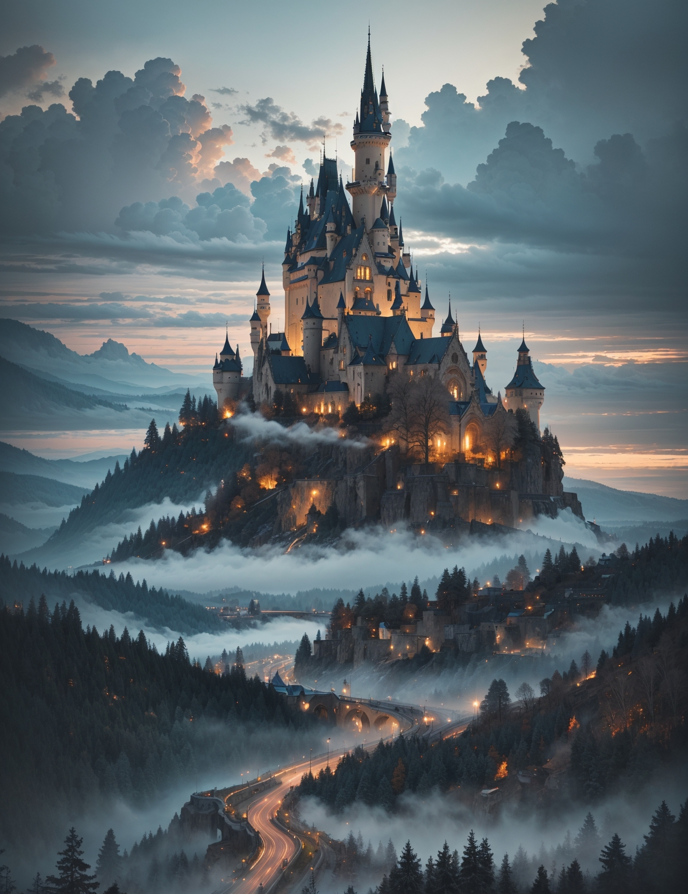

Gato estilo chino
30€
![ultra realistic photography, perfectly centered medium upper shot of Aloy from horizon zero dawn, creatures from horizon zero dawn jungle cliffs in the background, looking at viewer, fashion pose, extremely detailed eyes, detailed symmetric realistic face, extremely detailed natural texture, detailed peach fuzz, messy hair, masterpiece, absurdres, award winning photo by lee jeffries, nikon d850 film stock photograph, kodak portra 400 camera f1.6 lens, depth of field, extremely detailed, amazing, fine detail, rich colors, hyper realistic lifelike texture, dramatic lighting, unrealengine, trending on artstation, cinestill 800 tungsten, photo realistic, RAW photo, TanvirTamim, high quality, highres, sharp focus, extremely detailed, cinematic lighting, 8k uhd, high definition, cinematic, neoprene, behance contest winner, featured on unsplash, cgsociety, unreal engine 5, ultra sharp focus](./img/cuadro5.jpg)
Horizon Zero Dawn
50€
Gato en Nueva York
25€
Pintura clásica china
33€
Coche de LeMans
35€
Porsche 911
25€

Castillo mágico
40€
Ruinas griegas
30€
Gato estilo chino
63€
Gato noruego
25€
Ford GT90
40€
Barco embotellado
70€
Cuadro Interdimensional
50€